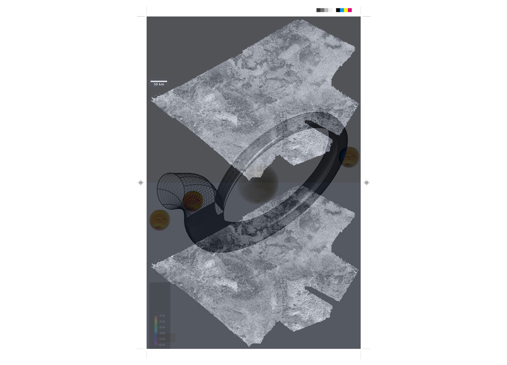
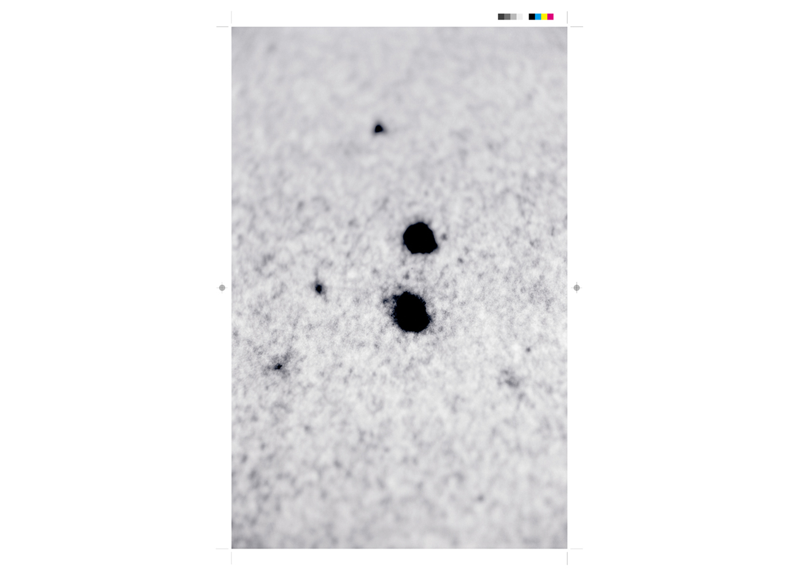

Piero Delucca
Ha studiato Letteratura a Fotografia al Dams di Bologna.
I suoi lavori degli ultimi anni esprimono una progettualità
legata ad un'idea "relazionale"
e "performativa" del materiale
fotografico, in cui hanno risalto struttura narrativa
e testualità (Il tecnico del dialogo, 1995, Continental
breakfast, 1999 e Un cerchio comune, 2000).
Ha approfondito il suo interesse per una fotografia
"smaterializzata", lontana da una dimensione narcisistica ed
espositiva, in una direzione che tende sempre più a sondare
territori extra-artistici.
Da sempre ha affiancato alla fotografia la pratica della
scrittura come approfondimento.
Nel corso del tempo ha unito all'attività di fotografo quella di
ideatore di progetti espositivi per la Galleria dell'Immagine di
Rimini sulla Fotografia Italiana ed Europea.
È tra i fondatori di Silverbook Produzioni
e del progetto
d’identità territoriale Lungofiume Project (Fiume Marecchia,
Rimini).
Ha curato la mostra Altri Luoghi, Riccione 1992 e per
Silver Books Edizioni le collane “Quaderni di Lang”, Quaderni
di Lang/Derive e“Silver e-books”. Ha contribuito a stilare “Il
manifesto della nuova documentazione” per Silverbook
Produzioni, “Manifesto” che tende a definire modalità di
lavoro in cui confluiscono “interiorità” ed “esteriorità” avendo
ben chiara la questione che è l’interiorità” (con tutte le sue
fluidità e le sue indeterminazioni) a dettare le regole di
lettura del “reale” che in sé non è mai definito una volta per
tutte.
PROGETTI
“Archivio dello spazio”, Milano, 1994-1997, a cura di Roberta
Valtorta e Achille Sacconi
MOSTRE (Selezione)
1989 “L’insistenza dello sguardo” AA.VV., a cura di I. Zannier
e P. Costantini, Venezia
1990 “Fotografia Italiana anni '90”, AA.VV., Fondazione
Corrente, Milano
1992 “Altri luoghi”, AA.VV., Palazzo del Turismo, Riccione
1998 “Pagine di fotografia italiana 1900-1998”, AA.VV., a cura
di Roberta Valtorta, Galleria Gottardo, Lugano
2000 “Camere senza tempo”, a cura di Angela Madesani,
Treviglio
2018 “Oltre I luoghi”, AA.VV, Ala nuova, Museo della Città,
Rimini
2019 “A time to Resume”, AA.VV, Ala nuova, Museo della
Città, Rimini
PUBBLICAZIONI (selezione)
“Technicon Diagnostics”, Silver Books Edizioni, 1992
“Il tecnico del dialogo”, Silver Books Edizioni, 1995
Altri luoghi, AA.VV., Riccione, 1992
“Intensive”, sito web e cd-rom, Silver Books Edizioni, 1996
“Web resume, cd-rom”, Silver e-books Edizioni, 2003
“Lungofiume Luogo d’anime”, Silver Book Edizioni, 2016.
“Oltre I luoghi AA.VV”, Editrice Quinlan, 2018
Read more...
DOPPIO ZERO
Un libero attraversamento dell'immaginario "scientifico". Dove " l'intelligenza
naturale" interagisce con l'iconografia tecnica.

DON'T CLEAN UP THE BLOOD
Nuda vita. Il titolo si rifà alle scritte presenti sui muri della scuola Diaz durante i fatti del G8 di
Genova del 2001. Allude alla necessità di non cancellare le tracce degli eventi successi. Le immagini
sono campionature da registrazioni di "sorveglianza" o documentazione reportagistica anni '50 e' 60. Una
sorta di nostra Golden Age. Tracce e impronte come Fotografia.
LE VIE MODERNE
Una "diversa" narrazione su fatti e persone vicini e lontani nello spazio- tempo.
Costruita secondo i canoni di una "nuova documentazione”.

LUNGOFIUME LUOGO D'ANIME
Una "diversa" narrazione su fatti e persone vicini e lontani nello spazio- tempo.
Costruita secondo i canoni di una "nuova documentazione”.